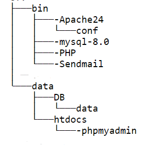
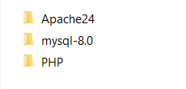
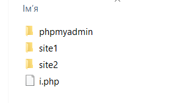

Даний сервер розподілений на дві частини (серверна і клієнська частина) складається із наступної структури:
Це дві папки bin i date, де bin - серверна частина, а data - клієнська
Директорія bin містить в собі основні елементи даного серверу: Apache - сервер, MySQL база даних, PHP - скриптова мова програмування
Apache HTTP-сервер — відкритий веб-сервер Інтернет для UNIX-подібних, Microsoft Windows, Novell NetWare та інших операційних систем. Apache розроблюється та підтримується спільнотою розробників відкритого програмного забезпечення під керівництвом Apache Software Foundation.
MySQL — вільна система керування реляційними базами даних, яка була розроблена компанією «ТсХ» для підвищення швидкодії обробки великих баз даних. Ця система керування базами даних з відкритим кодом була створена як альтернатива комерційним системам.
PHP, попередня назва: Personal Home Page Tools — скриптова мова програмування, була створена для генерації HTML-сторінок на стороні веб-сервера. PHP є однією з найпоширеніших мов, що використовуються у сфері веб-розробок . PHP підтримується переважною більшістю хостинг-провайдерів.
Каталог htdocs містить в собі клієнські файли, до яких користувач має доступ, і можу з ними працювати. В даному випадку це веб-сторінки та phpMyAdmin
